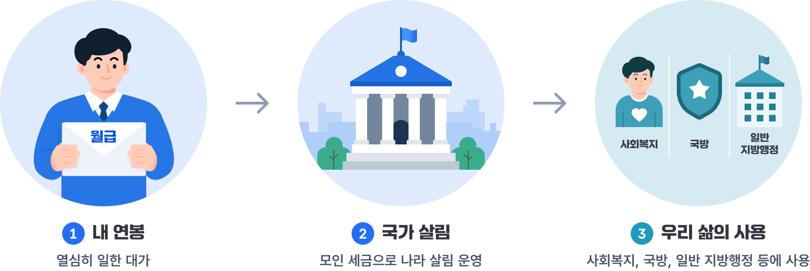
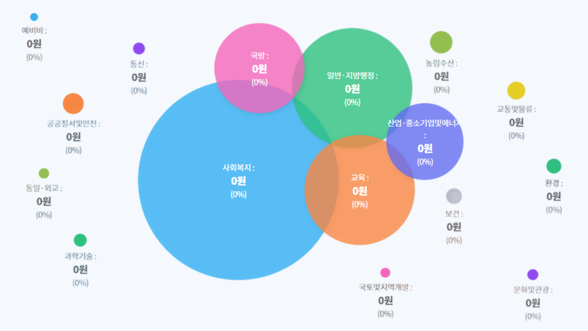

내 월급은 어떻게 쓰일까?
※ 내 월급이 우리나라 살림에 어떻게 기여하는지에 대해 알려드립니다.
내 연봉은
만원 이에요.
※ 실제 납부 내역과는 상이할 수 있으며, 입력하신 연봉을 기준으로 임의로 산출합니다.

입력해주신 연봉으로 약 연 2,2450,000원이 정부 수입으로 사용됩니다.
소득세는 급여와 부양가족수에 따라 국세청의 근로 소득 간이세액표 기준으로 산정되었으며, 자세한 비용은 국세청을 통해 확인할 수 있습니다.
소득세
급여와 부양가족수에 따라 국세청의 근로소득 간이 세액표 자료를 기준으로 공제해요.
연 0원
참고: 2025년 소득세 구간별 세율 및 누진공제금액
| 과세표준 | 세율 | 누진 공제액 |
|---|---|---|
| 1,400만원 이하 | 6% | - |
| 1,400만원 ~ 5,000만원 이하 | 15% | 126만원 |
| 5,000만원 ~ 8,800만원 이하 | 24% | 576만원 |
| 8,800만원 ~ 1.5억원 이하 | 35% | 3,594만원 |
2026년 정부 전체수입 약 727.9조원 중, 내 연봉에서 2,250,000원이 재원으로 사용됩니다. 비중은 약 0.00000000309108% 정도예요.
